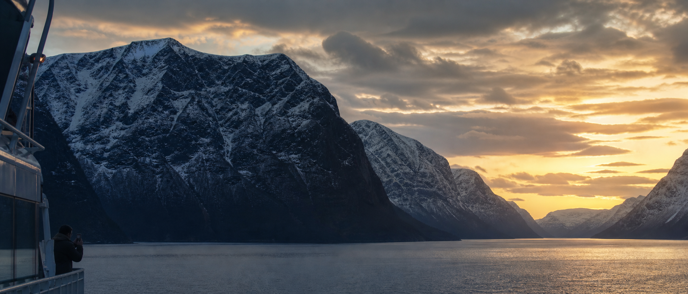
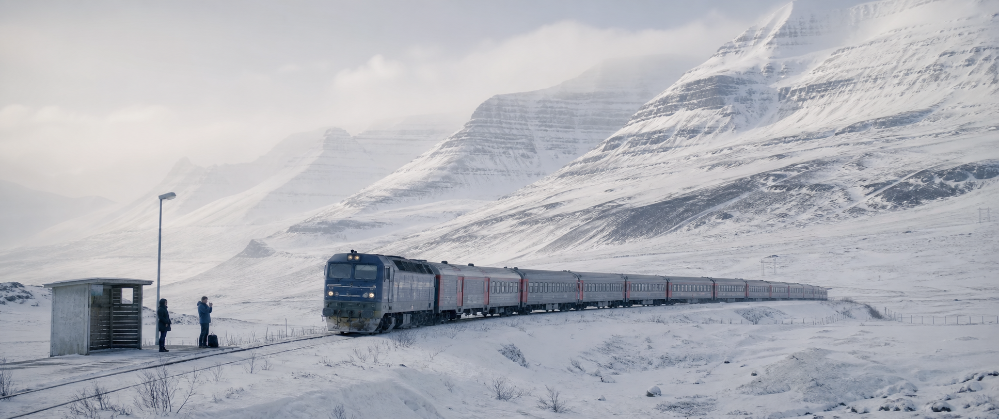
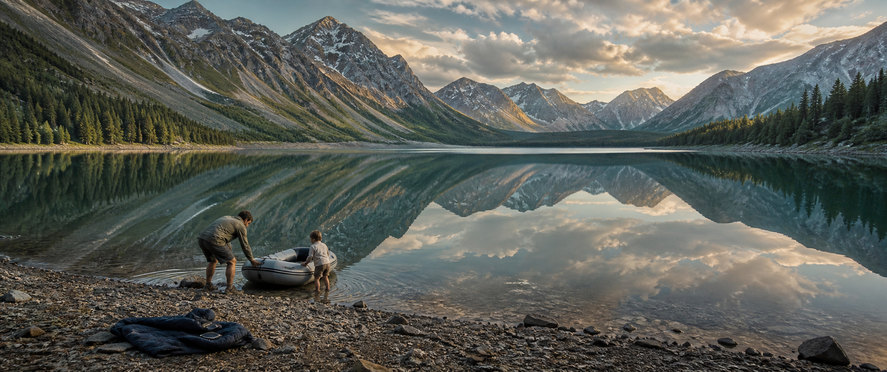
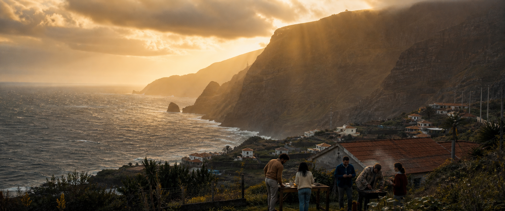
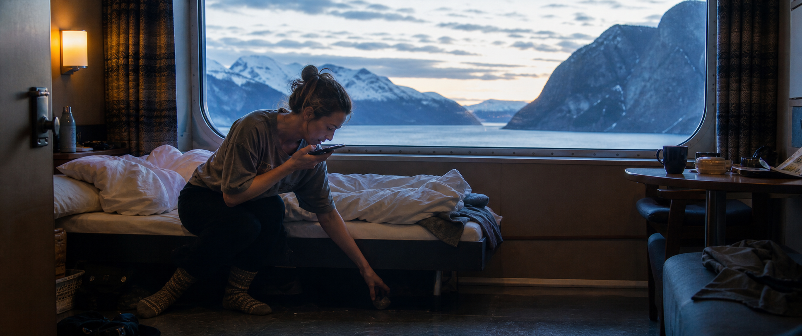
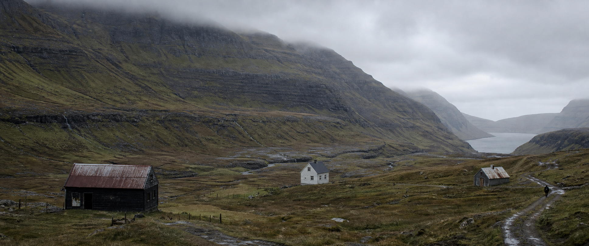

Follow the Light
6 个参考图绑定的视频生成提示词：5 个宏大环境镜头，1 个生活化人物镜头。四位真实说话者接力描绘未来工作方式；除 Shot 05 的现场语音外，全部为画外人声。全片无 BGM，只保留人声与真实环境音。
Style Contract
现实电影感 + 纪录片观察感 · 16:9 输出，构图保护 2.39:1 · 5 wide landscapes + 1 human detail · natural color · one camera move per clip.
声音铁律：NO BGM。人物说话必须像真实对话或语音留言，不使用广告腔。禁止视频会议、数字游民摆拍、悬崖边电脑、科幻 UI、AI 塑料脸与旅游宣传片式过饱和。
Locked Voice Script
01 · Maya: “We used to build companies around a place. Same room. Same hours.”
02 · Jonah: “Then work moved online. But somehow, we were still spending our days proving we were online.”
03 · Leila: “In the company ahead, you don’t stay inside the work all day. You set the direction, and agents carry it forward.”
04 · Daniel: “They keep the context, coordinate the work, and bring you in when judgment is actually needed.”
05 · Maya: “Sometimes, work is a two-minute voice note from the road. Then life keeps moving—and so does the company.”
06 · Jonah: “People lead. Agents keep the work moving. Company OS keeps it all connected.”
01–04 与 06 为画外人声；05 是人物在船舱内录制的现场语音。所有人声自然、不完美、无广告播音腔。NO BGM THROUGHOUT.
Fjord Ferry at Dawn

## 参考图使用 Image1: first-frame and environment reference only. Lock the monumental fjord geography, the small ferry at frame-left, the dawn direction, the person as a tiny incidental silhouette, and the initial 2.39:1 composition. Do not enlarge the person, change the vessel into a yacht, or transfer accidental facial details. ## 风格提示词 Ultra-photorealistic large-format documentary cinema, restrained premium technology brand film, natural 35mm grain, physically believable water, cloud, snow and wind. Present-day realism, no science fiction. The landscape is the subject; technology remains incidental. ## 首帧直方图 / 色板约束 Approximately 45% deep blue-charcoal shadows, 35% cool midtones, 20% soft amber highlights. Preserve detail in the mountain blacks and roll off the sunrise gently; no crushed silhouettes, no HDR halos, no oversaturated orange. These tonal constraints control the environment only and must not distort the small human figure. ## 人物状态 One adult traveler remains tiny on the exterior side deck at lower-left, body turned three-quarters toward the fjord, practical dark coat, relaxed shoulders, both hands resting naturally near the rail. The traveler never looks at camera and never becomes the visual center. ## 动作提示词 00:00-00:02: Begin exactly from Image1. The ferry advances slowly into the fjord; a narrow wake spreads with real water resistance. The traveler steadies against a light crosswind. 00:02-00:05: A light crosswind moves the coat hem and loose hair after the gust, not before it. The traveler subtly shifts weight with the vessel. 00:05-00:07: The traveler keeps watching the horizon while the ferry continues forward. 00:07-00:08: Hold the small figure and ferry in a stable cuttable composition for one second. Explicitly forbid: waving, posing, turning toward camera, walking away, climbing the railing, dramatic gestures. ## 表演 / 微表情 The face is too small to perform for camera. Use only believable body rhythm: one quiet breath, slight chin lift toward the light, shoulders settling with the vessel. No visible smile or heroic pose. ## 脸部稳定 / 身份保护 Keep the head and body anatomically stable at small scale. No duplicate figure, warped limbs, melted face, enlarged head, or floating phone. Do not invent close-up facial detail. ## 运镜镜头提示词 Extreme wide establishing shot, high but physically plausible camera position from the ferry structure, rectilinear ultra-wide geography with straight horizon and no fisheye. One main movement only: extremely slow forward drift, almost static. No orbit, drone dive, zoom, fast pan, shake, or internal cut. ## 光影材质提示词 Motivated dawn source from frame-right. Amber light touches the water path and cloud edges first; mountains remain cool and dimensional. Snow stays matte, ferry metal slightly wet, water heavy and cold, coat fabric wind-responsive. ## 音效提示词 MAYA voice-over, natural English-speaking woman in her late 30s, intimate but not whispered, thoughtful and unpolished, never an announcer. No visible person speaks. Verbatim: “We used to build companies around a place. Same room. Same hours.” Ambience: low ferry engine vibration, cold wind, water against the hull, one distant seabird. Keep ambience alive beneath the narration. Absolutely no BGM, no UI beep, no cinematic boom. ## 转场锚点 The low ferry-engine rumble continues across the cut and becomes the low rolling sound of the snow train in Shot 02. ## 负面提示词 No readable text, subtitles, watermark, logo, hologram, interface overlay, luxury yacht, tourist pose, influencer styling, fantasy mountains, aurora, cyberpunk color, time lapse, fast cloud motion, duplicate people, extra limbs, plastic skin, aggressive camera motion, auto BGM.
Snowfield Train

## 参考图使用 Image1: first-frame and environment reference. Lock the real passenger train, rural platform shelter, layered snow mountains, two tiny waiting travelers, screen direction and winter scale. Do not copy random face details or turn the platform into a modern city station. ## 风格提示词 Ultra-photorealistic Arctic location photography, large-format cinematic film still, quiet documentary realism, real snow texture and practical travel clothing. Expansive but not heroic or futuristic. ## 首帧直方图 / 色板约束 55% textured snow highlights, 35% pale blue-gray midtones, 10% soft charcoal shadows. Keep visible ridge and track detail in the white field. White point stays below clipping; no gray muddy snow and no blue monochrome cast. Human faces remain readable if visible. ## 人物状态 Two ordinary travelers wait beside the small shelter at frame-left. One holds practical luggage while both watch the arriving train. They are tiny scale references inside the snowfield, dressed for weather rather than fashion. ## 动作提示词 00:00-00:02: Begin from Image1. The train approaches slowly from frame-right along the fixed track; fine snow is pushed outward close to the wheels. 00:02-00:05: A wind gust crosses left-to-right. One traveler tightens a hand around the bag strap; the other shifts weight heel-to-toe while watching the front carriage. 00:05-00:08: The train decelerates naturally; wheel rotation slows and suspension settles. 00:08-00:09: Hold with the train nearly aligned to the platform and both travelers still standing. Explicitly forbid: boarding, running, waving, falling, posing, walking onto the track. ## 表演 / 微表情 Restrained anticipation only: eyes follow the engine before the head turns, one blink against wind, jaw relaxed. No broad smile, fear, or dramatic reaction. ## 脸部稳定 / 身份保护 Keep both identities separate and anatomically correct. No fused bodies, duplicate luggage, extra arms, stretched faces, or floating feet. Do not enlarge them relative to the environment. ## 运镜镜头提示词 Extreme wide rectilinear geography, camera fixed 20–25 meters from the travelers, distant observational lens compression, one main movement only: barely perceptible slow push-in. No orbit, drone flight, zoom pulse, pan, shake, or cut. ## 光影材质提示词 Diffuse overcast source from upper-left. Snow dust follows train movement and wind direction. Metal carriages remain cold and matte with soft reflections; clothing has realistic weight and delayed wind response. ## 音效提示词 JONAH voice-over, natural English-speaking man in his 30s, conversational, lightly self-aware, no corporate polish. No visible person speaks. Verbatim: “Then work moved online. But somehow, we were still spending our days proving we were online.” Ambience: low diesel-electric train roll, wheel rhythm, soft winter wind, fabric movement, distant brake hiss. Keep the train present but never mask the words. Absolutely no BGM, no horn blast, no station announcement, no exaggerated impact. ## 转场锚点 The final wheel-and-track rhythm cuts on beat to the dinghy scraping over small shoreline stones in Shot 03. ## 负面提示词 No readable signage, text, logo, watermark, modern city platform, fantasy locomotive, flying snow explosion, blizzard disaster, tourist crowd, video call, laptop, extra people, warped tracks, sliding train, wheel deformation, plastic faces, oversaturated blue, camera orbit, auto BGM.
Alpine Lake

## 参考图使用 Image1: first-frame and blocking reference. Lock the enormous lake, mountain ring, reflective sky, rocky shore, father at frame-left, daughter beside the worn dinghy, jacket and unattended phone on shore. Do not transfer any brand marks on the boat or invent a visible phone interface. ## 风格提示词 Ultra-photorealistic cinematic documentary, large-format landscape with an authentic family moment, subtle 35mm grain, natural body proportions and imperfect clothing. Quietly emotional, never sentimental advertising. ## 首帧直方图 / 色板约束 20% grounded shore shadows, 45% natural green-gray and skin midtones, 35% soft sky and water highlights. Preserve reflection detail; no clipped clouds, neon turquoise water or excessive mirror symmetry. Faces stay in natural midtone even when small. ## 人物状态 Father and daughter are already holding the dinghy at the waterline, focused on a shared physical task. The phone remains face-up but unattended on the jacket behind them. Both look at the boat and water, never at camera or phone. ## 动作提示词 00:00-00:02: Begin from Image1. Father shifts weight forward, hands compress the rubber edge; daughter braces both feet on wet stones. 00:02-00:06: Together they push the dinghy 40–60 centimeters into the shallows. Stones resist, hull flexes slightly, water displaces and ripples spread outward. Clothing and hair react gently to the breeze after body movement. 00:06-00:08: The dinghy begins to float; father releases one hand, daughter steadies the side. 00:08-00:10: Hold the completed contact with both still at the waterline for a cuttable ending. Explicitly forbid: looking at phone, entering the boat, falling, jumping, hugging, waving, turning to camera. ## 表演 / 微表情 Concentration and shared familiarity: father checks the daughter’s grip with one brief side glance; daughter presses lips slightly, then shoulders soften when the boat floats. No performed joy or commercial smile. ## 脸部稳定 / 身份保护 Keep realistic family resemblance, correct hands, feet and joint movement. No extra fingers, merged arms, changing ages, enlarged heads, duplicated child, or rubber-body deformation. ## 运镜镜头提示词 Very wide 2.39:1 frame, camera low and 8–12 meters from subjects, natural perspective with mountains fully dominant. One movement only: slow restrained push toward the waterline. No orbit, crane, drone, zoom, fast tracking, shake, or cut. ## 光影材质提示词 Late-afternoon source from upper-right creates soft rim on shoulders and small specular movement on water. Rocks remain wet and irregular; dinghy rubber flexes under hand pressure; jacket fabric stays heavy on ground. ## 音效提示词 LEILA voice-over, natural English-speaking woman in her early 30s, calm, clear and reflective, as if speaking to colleagues rather than an audience. No visible person speaks. Verbatim: “In the company ahead, you don’t stay inside the work all day. You set the direction, and agents carry it forward.” Ambience: small water movement, dinghy rubbing over stones, shoes shifting on gravel, one quiet child breath, distant birds. Let the physical sounds breathe between phrases. Absolutely no BGM, no laughter track, no notification, no dramatic swell. ## 转场锚点 The expanding lake ripple cuts to the first Atlantic wave line in Shot 04. ## 负面提示词 No readable text, logo, watermark, phone UI, tourist pose, luxury resort, influencer family, staged hug, perfect fashion, fantasy lake, neon water, duplicated mountains, extra limbs, deformed hands, floating objects, rapid camera, auto BGM.
Atlantic Cliffs at Dinner

## 参考图使用 Image1: first-frame and environment reference. Lock the monumental Atlantic cliffs, coastal town scale, backyard table at lower foreground, five small friends and sunset direction. Keep the people incidental and do not convert the setting into a luxury villa or tourist overlook. ## 风格提示词 Ultra-photorealistic global brand-film location photography, candid friendship, natural 35mm color and imperfect domestic objects. Large-scale landscape with ordinary humor, grounded present day. ## 首帧直方图 / 色板约束 25% textured cliff shadows, 45% warm neutral midtones, 30% amber sky and sea highlights. Preserve highlight roll-off around the sun shafts; no orange wash, crushed people or HDR edge halos. Human skin remains natural and non-waxy. ## 人物状态 Five friends in their 30s–40s prepare a casual backyard dinner. Two carry table items, one works at a stubborn barbecue, one holds a plate, one briefly checks a phone. Everyone is occupied with a real task; nobody addresses camera. ## 动作提示词 00:00-00:02: Begin from Image1. Wind moves plants and loose clothing left-to-right; ocean waves advance far below. Friends continue small independent dinner preparations. 00:02-00:05: The phone-holder glances once, presses one simple confirmation with the thumb, then places the phone face-down on the table. At the same time the barbecue person tries the lighter once; it fails naturally. 00:05-00:08: The phone-holder immediately reaches for a plate and rejoins the physical task. Another friend reacts to the failed lighter with a small silent half-smile. 00:08-00:09: Hold the group continuing dinner preparation while the phone remains face-down. Explicitly forbid: group toast, cheering, posing, showing phone to camera, dancing, hugging, entering or leaving frame. ## 表演 / 微表情 Underplayed familiarity: brief eye contact, one quiet amused exhale, hands stay busy. Phone-holder shows no triumph, only a tiny release of jaw tension before returning to the table. ## 脸部稳定 / 身份保护 Keep all five identities separate, correct scale and anatomy. No face fusion, duplicated person, extra arms, changing clothes, oversized heads or waxy skin. Do not sharpen tiny faces unnaturally. ## 运镜镜头提示词 Extreme wide 2.39:1 master shot, camera 20–25 meters from the group with cliffs and sea dominant. One main movement only: extremely slow lateral reveal to the right, less than one meter equivalent. No orbit, drone rise, push-pull zoom, fast pan, shake, or cut. ## 光影材质提示词 Motivated sunset source from upper-left behind cloud. Warm rim on shoulders and table edges; cliff faces retain deep structure. Smoke from barbecue follows wind and stays thin. Wood, ceramic, cloth and vegetation remain tactile and imperfect. ## 音效提示词 DANIEL voice-over, natural English-speaking man in his early 40s, grounded and concise, no announcer weight. No visible person speaks. Verbatim: “They keep the context, coordinate the work, and bring you in when judgment is actually needed.” Ambience: Atlantic wind, distant surf, plates on wood, one lighter click, low natural table conversation too indistinct to understand. The narration remains clear. Absolutely no BGM, no notification beep, no triumphant sound. ## 转场锚点 The lighter click creates a brief warm flare that cuts to the small warm cabin lamp in Shot 05. ## 负面提示词 No readable text, logo, watermark, corporate party, luxury villa, influencer dinner, staged smiles, phone presentation, video call, laptop, fantasy cliffs, oversized sunset, orange color wash, face fusion, extra limbs, fast camera, auto BGM.
Ferry Cabin Voice Note

## 参考图使用 Image1: first-frame and temporary identity-state reference. Lock the woman’s age, natural face, messy tied hair, faded T-shirt, warm socks, unmade ferry bed, large fjord window, phone position and dawn light. Do not transfer any accidental unreadable screen content or change the cabin into a hotel. ## 风格提示词 Ultra-photorealistic candid human documentary cinema, restrained premium technology film, natural pores, believable hands, real fabric wrinkles and quiet 35mm grain. Future-of-work feeling comes from behavior, not visual effects. ## 首帧直方图 / 色板约束 40% cabin shadows, 40% cool natural midtones, 20% soft exterior highlights and one warm lamp practical. Keep the face in readable midtone with small eye catchlight; do not silhouette or beauty-fill the face. Fjord highlights remain below clipping. ## 人物状态 Woman in late 30s sits on the edge of the unmade bed, torso bent naturally, one foot grounded, one hand searching under the bed for a missing sock, the other holds the phone close to her mouth. She has just woken up and is mildly amused, not polished or energetic. ## 动作提示词 00:00-00:02: Begin exactly from Image1. She searches under the bed with fingertips while drawing a quiet morning breath; eyes stay on the floor. 00:02-00:07: Without looking up, she records one short voice note. Her mouth moves naturally in sync; the searching hand stops for half a second on the sentence break. 00:07-00:09: She finishes, lowers the phone onto the bed, finds the missing sock and gives one tiny closed-mouth smile to herself. 00:09-00:10: Hold with sock in hand, phone resting on bed, gaze still downward. Explicitly forbid: standing, looking at camera, waving phone, showing screen, exaggerated smile, lying down, leaving frame. ## 表演 / 微表情 Eyes remain slightly sleepy; one blink before speaking, small brow focus on the important phrase, quiet exhale after sending, jaw releases, closed-mouth private smile only. Hands stay motivated by the sock search. ## 脸部稳定 / 身份保护 Preserve the reference face shape, age, asymmetry, skin texture, eye spacing, nose and mouth position. No beautification, face slimming, age change, makeup, mask skin, warped jaw, uneven eye size, extra fingers or fused phone. ## 运镜镜头提示词 Medium-wide environmental portrait, camera at seated eye height about 4–5 meters away, natural perspective. One main movement only: very slow 5% push-in. No orbit, rack-focus gimmick, sudden zoom, handheld shake, pan, or cut. ## 光影材质提示词 Cold dawn from the window is the key source; dim warm lamp remains secondary. Preserve skin midtones, cotton wrinkles, wool sock texture, imperfect bedding and slight window reflections. No glossy commercial polish. ## 音效提示词 MAYA diegetic voice note, natural English-speaking woman in her late 30s, slightly sleepy low-mid register, intimate phone distance, unhurried, warm but not sentimental, no announcer polish. MAYA verbatim: “Sometimes, work is a two-minute voice note from the road. Then life keeps moving—and so does the company.” Physical behavior during line: she keeps searching for the sock; the hand pauses briefly between the two sentences. Ambience: low ferry vibration, distant water, bedding and clothing rustle. Dip ambience slightly under speech but never mute the room. Absolutely no BGM, no send chime, no AI voice. ## 转场锚点 The tail of the ferry-room vibration becomes the low North Atlantic wind across the open valley in Shot 06. ## 负面提示词 No subtitles, readable text, logo, watermark, video meeting, laptop, hologram, beauty retouch, fashion makeup, influencer pose, perfect hotel room, broad smile, extra fingers, warped phone, lip-sync drift, voice change, camera orbit, auto BGM.
North Atlantic Valley

## 参考图使用 Image1: first-frame and environment reference. Lock the monumental irregular valley, low cloud on the ridge, muted rain-darkened vegetation, exposed rock, distant grey inlet, three widely separated ordinary houses with different non-turf roofs, muddy path, and the tiny person near frame-right. Do not rearrange the houses, enlarge the person, beautify the weather, or add regional tourist clichés. ## 风格提示词 Ultra-photorealistic North Atlantic observational landscape cinema, high-budget documentary realism, subdued natural color, restrained 35mm grain, physically believable wind, fog and wet ground. Vast but ordinary, present-day and inhabited; never a tourism commercial or science-fiction future. ## 首帧直方图 / 色板约束 30% dark wet rock and building shadows, 50% muted olive-brown and grey midtones, 20% soft cloud and inlet highlights. Preserve texture in the fog and dark mountain bands. No white clipping, HDR edge halos, glowing grass, teal cast or artificially dramatic contrast. Tonal constraints apply to the landscape; do not brighten the tiny person. ## 人物状态 One fully clothed adult in plain dark waterproof clothing walks alone along the muddy path at far-right, less than one percent of frame height. The person is simply returning toward the houses, almost easy to miss, with no visible device and no performance for camera. ## 动作提示词 00:00-00:02: Begin exactly from Image1. Low cloud crosses the upper ridge slowly; thin runoff follows existing channels. The person continues along the path at a natural walking pace. 00:02-00:06: A modest wind crosses left-to-right, moving only loose grass and the walker’s coat hem. The person takes several careful steps around a wet patch without changing direction. 00:06-00:08: The walker continues toward the small house while the fog briefly reveals a little more of the ridge. End on the same balanced wide composition. Explicitly forbid: waving, running, stopping to pose, raising a phone, looking at camera, approaching foreground, entering a house, vehicles, added people, dramatic weather transformation. ## 表演 / 微表情 No visible facial performance because the person is extremely small. Use only ordinary walking rhythm, cautious foot placement on wet ground, slight torso response to wind and realistic coat inertia. No heroic silhouette or emotional gesture. ## 脸部稳定 / 身份保护 Keep the tiny body anatomically stable and consistently scaled. Do not invent face detail. No duplicate walker, changing clothing, enlarged head, extra limbs, sliding feet, floating body or sudden scale drift. ## 运镜镜头提示词 Extreme wide 2.39:1 geography, real tripod at human roadside height, rectilinear 40mm spherical perspective. One main movement only: an almost imperceptible slow push of less than three percent. No drone rise, orbit, zoom pulse, pan, tilt, handheld shake, speed ramp, time lapse or internal cut. ## 光影材质提示词 Diffuse overcast light from the open sky, with no direct sunbeam. Wet grass stays muted olive-brown; basalt remains dark and porous; corrugated roofs show restrained rust and water streaks; the inlet is heavy slate-grey. Fog must occlude the mountain naturally rather than glow. ## 音效提示词 JONAH voice-over, the same natural English-speaking man heard in Shot 02, now quieter and certain without sounding triumphant. No visible person speaks. Verbatim: “People lead. Agents keep the work moving. Company OS keeps it all connected.” Ambience: broad valley wind, fine rain on rock, distant runoff, one faint seabird and soft boot contact far away. Leave one full second of landscape ambience after the final words. Absolutely no BGM, no sonic logo, no UI chime, no artificial AI voice. ## 转场锚点 Hold the wide valley for one second after “connected.” The wind continues under a simple Company OS end card or a real product capture; do not introduce music at the logo. ## 负面提示词 No subtitles, readable generated text, logo, watermark, turf roofs, grass roofs, themed village, tourist campaign polish, glowing valley, sun rays, golden hour, fantasy fog, sci-fi structure, laptop, phone, hologram, luxury cabin, model pose, foreground person, extra people, duplicate houses, sliding feet, scale drift, drone motion, auto BGM.
片尾与真实产品画面
建议在 Shot 06 最后一句之后继续保留 1 秒山谷风声，再出现极简 Company OS 片尾。若加入任务、证据、权限和审批画面，只使用真实产品录屏，不让视频模型生成可读 UI；产品段同样不加 BGM。